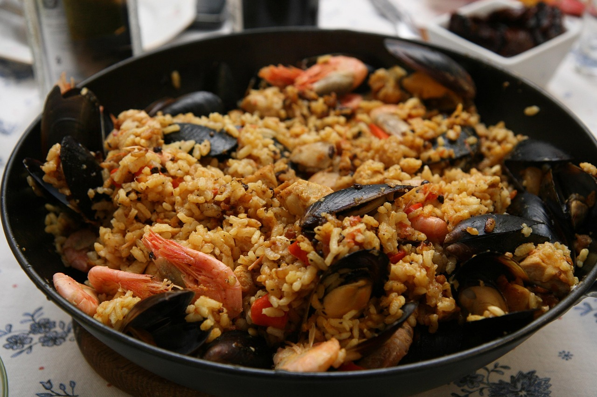

Paella mit Meeresfrüchten
22min
mittel
22.08.2025
Was werden wir brauchen?
Das Gericht ist für mindestens zwei Personen gedacht, und die Zutaten werden so angepasst an die Anzahl der Personen , die essen werden.
Zutaten:
Zubereitung
Zubereitung 35 min
Zeit 60 min
Erstmal wird die Suppe in einem separaten Topf mit Fisch und Meeresfrüchten gemacht. Auf der Pfanne erden wird Olivenöl und Knoblauch erwärmt. Zunächst wird der Rest von den Meeresfrüchten auf der Pfanne mit dem Olivenöl gebraten. Danach, wenn die Garnelen schon die rote Farbe bekommen, kann man den Reis darauf tuen, und damit quasi etwas frittieren, Damit es den Geschmack von dem Fisch nimmt. Wenn es 5 Minuten lang gebraten hat, kann man die Suppe langsam auf die Pfanne mit dem Rest tun, damit der Reis anfängt zu kochen. In dem Moment, wo alles am Kochen ist, kann man Safran auch da reintun, so wird es einen besseren Geschmack haben.
Nährungswerte pro Portion
| kalorien | Eiweiss | kohlenhydrate | Fett |
|---|---|---|---|
| 500kcal | 35g | 40g | 15g |